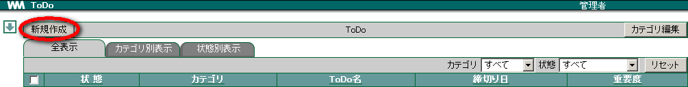
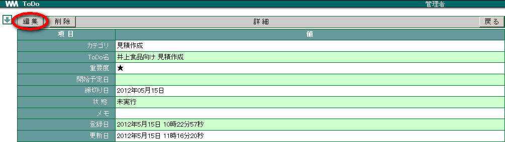

9. ToDo¶
「こなすべき仕事」や「仕上げるべき作業」などを書き出し、リストアップします。「締め切り日」を設定することにより、終了させる日程を意識することができます。一覧を「カテゴリ別」「状態別」に切り替えて表示することもできます。
9.1. カテゴリを登録する¶
メニューの
 をクリックします。
をクリックします。カテゴリ編集 をクリックします。

新規登録 をクリックします。

各項目を入力し、 OK をクリックします。

Note
カテゴリコード ： 任意の数字を入力します。複数のカテゴリを登録する場合、カテゴリコードが重複しないようにします。また、複数のカテゴリを登録した場合、カテゴリはカテゴリコードが若い順に表示されます。
9.2. ToDo を登録する¶
メニューの
をクリックします。新規作成 をクリックします。

各項目を選択・入力し、 OK をクリックします。 [1]

Warning
[ToDo名] は必須項目です。
9.3. 登録した ToDo を確認する¶
登録した ToDo リストを確認しましょう。詳細を確認し、意識付けしましょう。
メニューの
をクリックします。確認したい ToDo の「ToDo名」をクリックします。

内容を確認し、 戻る をクリックします。


9.4. ToDo を完了する¶
終えた仕事は「完了」にします。完了したことを示すようにグレーアウトされます。
メニューの
をクリックします。完了にしたい ToDo にチェックを入れ、「状態」から 完了 を選択し、 変更 をクリックします。

完了となった ToDo がグレーアウトされます。

9.5. ToDo を修正する¶
メニューの
をクリックします。修正したい ToDo の「ToDo名」をクリックします。

詳細画面が表示されますので、 編集 をクリックして内容を修正します。

9.6. ToDo を削除する¶
登録した ToDo を削除します。一度削除すると元に戻すことはできません。
メニューの
をクリックします。削除したい ToDo にチェックを入れ、 削除 をクリックします。

確認メッセージが表示されたら OK をクリックします。
脚注
| [1] | アラームメールにつきましては、 スケジュール の 予定日時の前に自分宛にメールで知らせる をご参照ください。 |